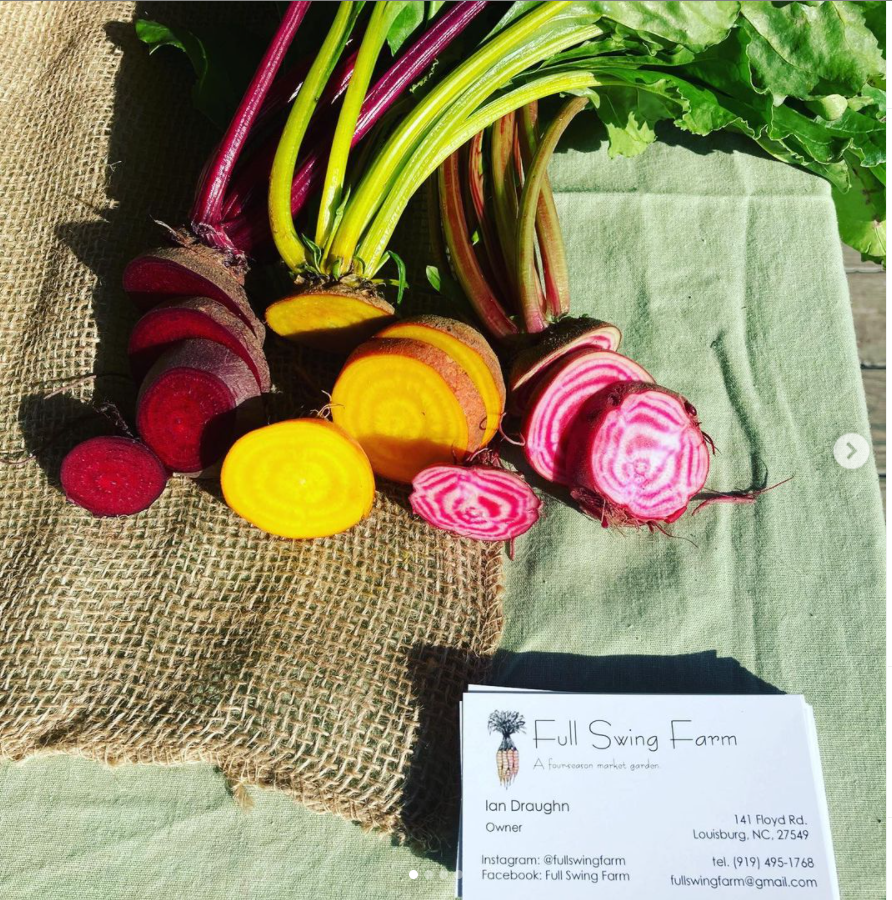
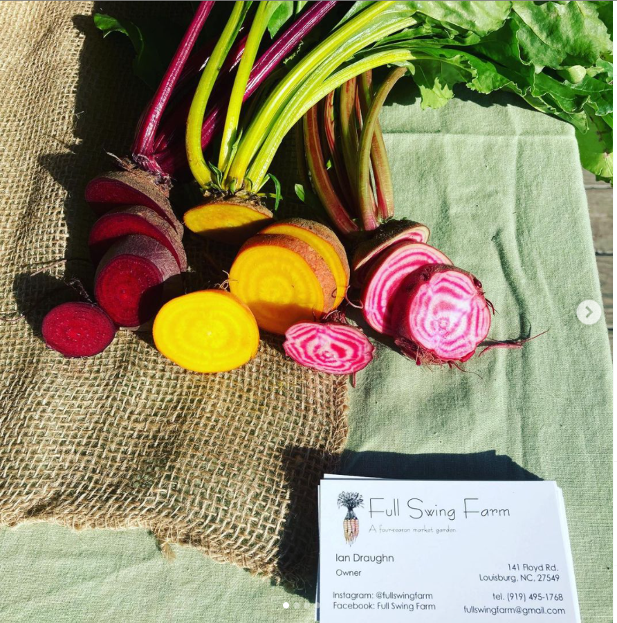

Local, Seasonal Food Grown Right

Fullswing Farm was started in August of 2020 by Ian Draughn after seing a need for locally sourced agriculture. The site displays his passion for his food and his community. All his experience comes from real world year round market gardening here in North Carolina. Come check out>
FULLSWINGFARM


 



Automated e-mail sign up for alerts, Produce Reservation (Basket), Weekly inventory display, and Suggested prep. options.
The nature of "farm-to-table" minimizes most online inventory with the market garden model being fresh and first come first serve. The resevation system became a prominent feature as well as the email contact list. Cash is king in some industries and working around that here was not too difficult with more instant person to person digital exchanges like Paypal, Zelle, and Cashapp.
The purpose of this site is to inform local shoppers where and when FullSwing Farm produce will be available. Resevations help with farm pick-ups and Restaurant deliveries.